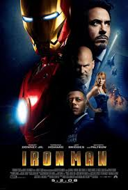

მთავარ გვერდზე დაბრუნება

ფილმის სახელი: რკინის კაცი
ფილმის შეფასება: 7.9 / 10
ფილმის მოკლე აღწერა: ავღანეთის გამოქვაბულში ტყვედ ყოფნის შემდეგ, მილიარდერი ინჟინერი ტონი სტარკი ბოროტების წინააღმდეგ საბრძოლველად უნიკალურ, იარაღად გადაკეთებულ ჯავშანს ქმნის.